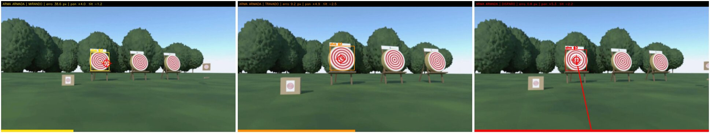
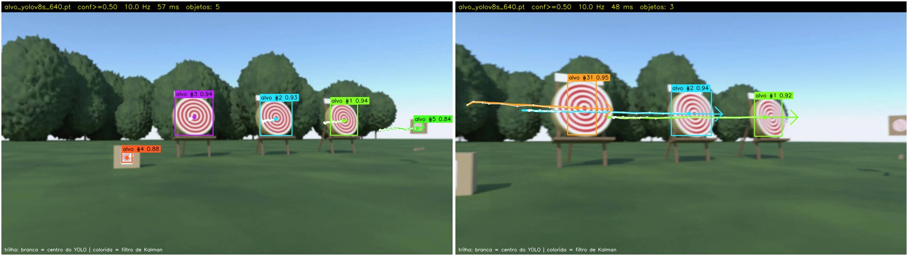

entrega-tp2 / tag tp2 · 28/09/2026projeto-pb-Dev-RMV)| Requisito | Entrega |
|---|---|
Interfaces customizadas: .msg do domínio, .srv de controle e .action com goal, feedback de progresso e result com métricas; compilar com Colcon e verificar com ros2 interface list |
msg/DeteccaoObj (classe, confiança, caixa x y w h, id do rastreador, centro e velocidade filtrados) e msg/DeteccaoArray; srv/ControleArma (trava de segurança: armar/desarmar); action/EngajarAlvo: goal (classe, confiança mínima, tolerância, tempo para travar, tempo máximo), feedback (estado, progresso 0–1, erro, pan/tilt, id) e result (disparou, tempos, ciclos, erro médio e final, posição da torre). As 8 interfaces do pacote aparecem no ros2 interface list |
| Action Server da tarefa principal, com feedback e cancelamento; Action Client que envia goals, exibe cada feedback e registra o result; servidor e cliente rodando juntos | servidor_engajar: mira a torre pan/tilt no alvo e “dispara” o emissor de luz; feedback a cada ciclo (10 Hz); aceita cancelamento; aborta por tempo esgotado ou desarme. cliente_engajar: arma a torre pelo serviço, envia os goals, imprime cada feedback e grava o result no log e em CSV; opção de cancelar no meio (fig. 3) |
| Rastreamento de objetos em vídeo com YOLO, filtro para suavizar a trajetória, trilha e bounding box no frame de saída | rastreador_yolo: YOLOv8s treinado para a classe alvo (alvo de tiro impresso) + ByteTrack (ids) + filtro de Kalman por id; publica DeteccaoArray e a imagem com caixa, id, confiança, trilha bruta (branca) e filtrada (colorida) (fig. 2) |
Parâmetros em YAML (limiar de confiança, frequência, modelo YOLO), carregados com ros2 param e alterados em execução; URDF com links, joints, câmera e sensores simulados |
config/params.yaml com todos os nós; o rastreador valida e aplica mudanças em execução (ros2 param set/load); scripts/demo_parametros.sh demonstra. Pacote projeto_bloco_description: URDF (xacro) com chassi, 2 esteiras (4 rodas continuous), torre pan/tilt (2 revolute) com o emissor, câmera e lidar; plugins do Gazebo 11 para câmera, lidar e esteiras |
alvos_dv20.mp4 → camera_publisher → /camera/image_raw
→ rastreador_yolo (YOLOv8s + ByteTrack + Kalman) → /vision/deteccoes · /vision/rastreamento
→ servidor_engajar ⇄ action /engajar_alvo ⇄ cliente_engajar (+ srv /arma/controle)
→ /torre/joint_states → joint_state_publisher → robot_state_publisher (URDF, TF) → RViz
ros2_ws/midia/alvos_dv20.mp4 (1280×720, 30 fps, 24 s): o robô anda, para e gira num campo de tiro com 5 alvos (3 fardos, uma folha A4 numa caixa e um recorte numa placa). É um render do Blender com uma degradação que imita a câmera do robô (campo de visão de 70°). É o vídeo padrão do tp2.launch.py; source:=0 usa a câmera.ros2_ws/.venv).x, y, vx, vy); σa = 200 px/s² e σz = 15 px, calibrados nas trilhas do vídeo. A velocidade estimada também alimenta a mira. O nó registra a rugosidade da trilha bruta × filtrada a cada 10 s./arma/controle: trava de segurança. Com a arma desarmada, a action rejeita goals; desarmar durante um engajamento aborta o goal.ParameterDescriptor) e callback de validação. Mudar a frequência recria o timer; mudar modelo ou dispositivo recarrega a rede. Como o ros2 param load reenvia todos os valores, o nó só reage ao que mudou.camera_optical_link e emissor_link na ponta do cano. No tp2.launch.py, as juntas da torre vêm do servidor e o RViz mostra a torre girando. No Gazebo: /camera/image_raw, /scan (360 amostras, 0,15–12 m) e /cmd_vel → /odom.git clone https://github.com/Dev-RMV/projeto-pb-Dev-RMV.git && cd projeto-pb-Dev-RMV ./scripts/reproduzir.sh # instala o que faltar, compila, sobe o TP2, roda o cliente e a demo de parâmetros
scripts/setup.sh instala pelo apt (ROS 2, RViz, xacro, Gazebo 11) e cria o venv do YOLO com as versões de requirements.txt. Para rodar à mão, cada terminal com source ros2_ws/ambiente.sh:
ros2 launch projeto_bloco tp2.launch.py show:=true rviz:=true · ros2 run projeto_bloco cliente_engajar · bash scripts/demo_parametros.sh · ros2 launch projeto_bloco_description display.launch.py (URDF) · gazebo.launch.py (sensores simulados).
| Medida | Resultado |
|---|---|
| Interfaces e testes | ros2 interface list: 8 interfaces (4 msg, 3 srv, 1 action); colcon test: 7 testes, nenhuma falha (flake8, pep257, xmllint, lint_cmake; o de copyright é pulado) |
| Detecção no vídeo | os 5 alvos visíveis detectados, com confiança ≥ 0,72 (mediana 0,93); ~54 ms por quadro na CPU (4 threads), publicado a 10 Hz |
| Filtro de Kalman | trilha 72% mais lisa na calibração (2ª diferença do centro), com ~5 px de atraso; em execução, −37% a −74% por janela de 10 s |
| Engajamento (fig. 1 e 3) | DISPARO no alvo #2 em 0,9 s, com o erro caindo de 59,6 para 1,5 px (10 feedbacks); goal cancelado aos 2,0 s devolvendo as métricas parciais; goal com a arma desarmada é rejeitado; desarmar no meio aborta o goal |
| Parâmetros em execução | frequência 10 → 3 → 2 → 10 Hz medidos com ros2 topic hz; limiar, tamanho de entrada (640 → 960) e modelo (alvos → YOLO11n do COCO → alvos) trocados em execução; recusados: confiança 1,5, classe desconhecida e modelo inexistente |
| URDF e simulação | check_urdf sem erros: 15 links e 14 juntas (4 continuous, 2 revolute, 8 fixed); árvore de TF completa (view_frames); no Gazebo, /scan a 10 Hz e câmera a 15 Hz; giro no lugar de 158° dos 172° comandados |

/torre/visao: a mira da torre em MIRANDO → TRAVADO → DISPARO (feixe vermelho). A barra inferior é o progresso enviado no feedback.
/vision/rastreamento: os 5 alvos com caixa, id do ByteTrack e confiança; trilha branca = centro bruto do YOLO, colorida = filtro de Kalman, e a seta mostra a velocidade estimada. À direita, durante um giro do robô.ros2 launch projeto_bloco tp2.launch.py)[446.892] /engajar_alvo e /arma/controle prontos;
arma DESARMADA
[451.022] /arma/controle -> arma ARMADA: goals de
/engajar_alvo liberados
[451.040] goal aceito: classe="alvo" confianca>=0.50
tolerancia 15 px, travar 0.5 s, limite 30 s
[452.041] goal sucesso: DISPARO em alvo #2 com erro
1.5 px apos 0.9 s | ciclos 10 (com alvo 10),
erro medio 15.4 px
[453.493] goal aceito: ... travar 5.0 s, limite 30 s
[455.493] cancelamento pedido pelo cliente: aceito
[455.493] goal cancelado: cancelado pelo cliente
apos 2.0 s | ciclos 20 (com alvo 20)ros2 run projeto_bloco cliente_engajar)[451.038] /arma/controle: arma ARMADA [451.040] [goal 1] aceito [451.041] feedback 1: MIRANDO 10.0% erro 59.6 px [451.141] feedback 2: MIRANDO 31.2% erro 36.0 px [451.241] feedback 3: MIRANDO 43.8% erro 21.9 px [451.341] feedback 4: TRAVADO 50.0% erro 13.6 px [451.541] feedback 6: TRAVADO 70.0% erro 5.4 px [451.841] feedback 9: TRAVADO 100.0% erro 1.8 px [451.941] feedback 10: DISPARO 100.0% erro 1.5 px [452.042] RESULT SUCESSO: DISPARO em alvo #2 duracao 1.00 s | disparo 0.90 s | ciclos 10 erro medio 15.4 px, final 1.5 px | pan +5.2 tilt -2.2 [455.492] [goal 1] pedindo cancelamento [455.494] RESULT CANCELADO: apos 2.0 s (20 feedbacks)
alvo. O YOLO11n ficou só na demonstração de troca de modelo.cv_bridge: o pip install ultralytics trazia o numpy 2, que quebra o cv_bridge do Humble. O Ultralytics ficou num venv com versões fixas (numpy 1.26, opencv-python 4.11), posto no PYTHONPATH pelo ambiente.sh.cv2.imshow chamado das threads do MultiThreadedExecutor travava o serviço /arma/controle. A janela passou para a thread principal e o executor para uma thread própria.ros2 param load no Humble: exige o nome completo do nó (/rastreador_yolo: no YAML) e reenvia todos os valores, o que recarregava o modelo várias vezes.reproduzir.sh: o launch iniciado em segundo plano herdava o SIGINT ignorado (isso já acontecia no TP1). Resolvido iniciando o job com set -m.